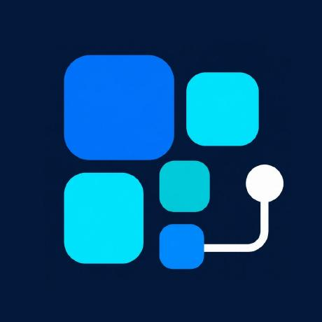
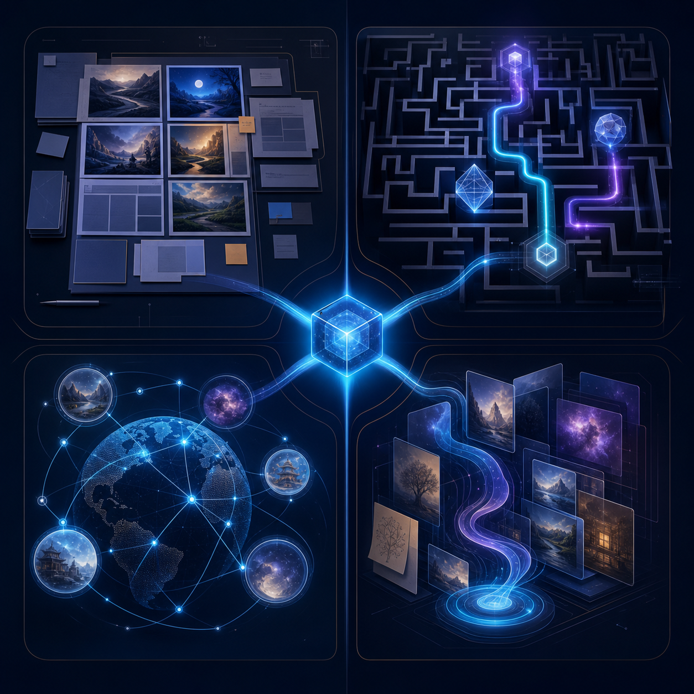
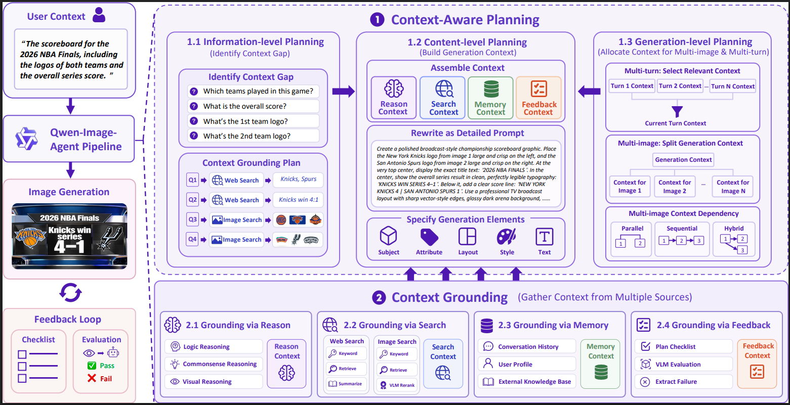
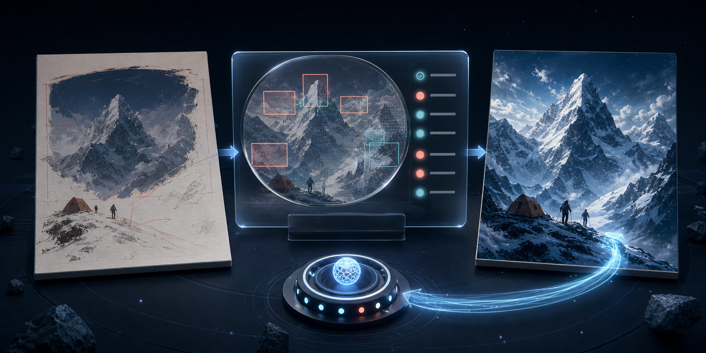
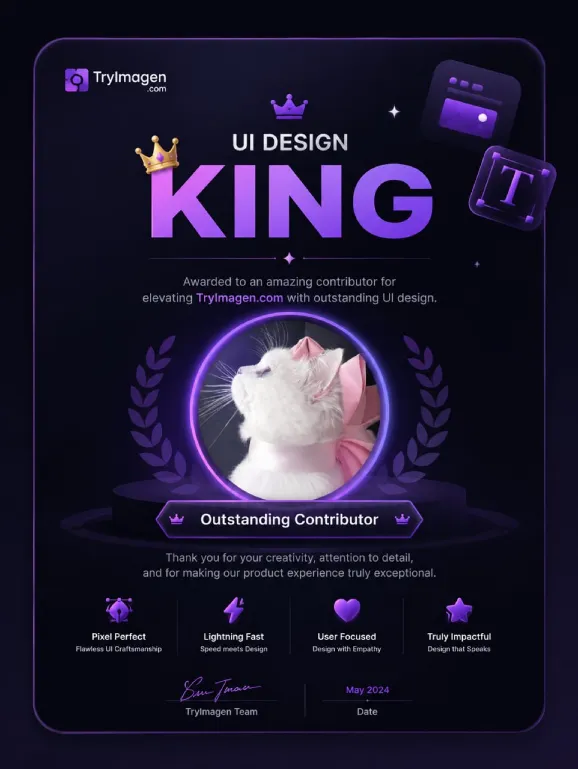
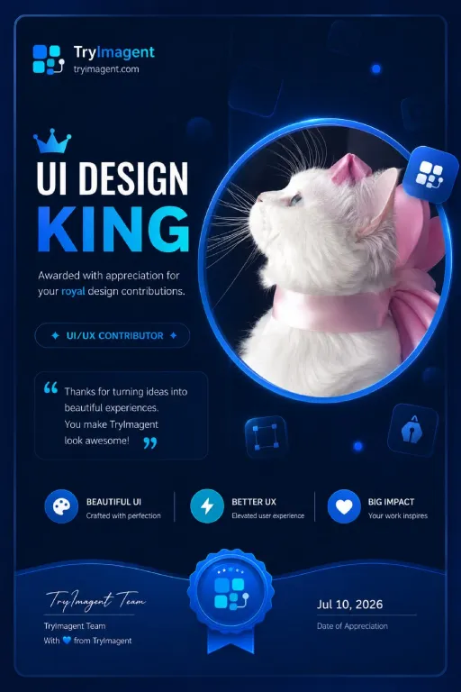
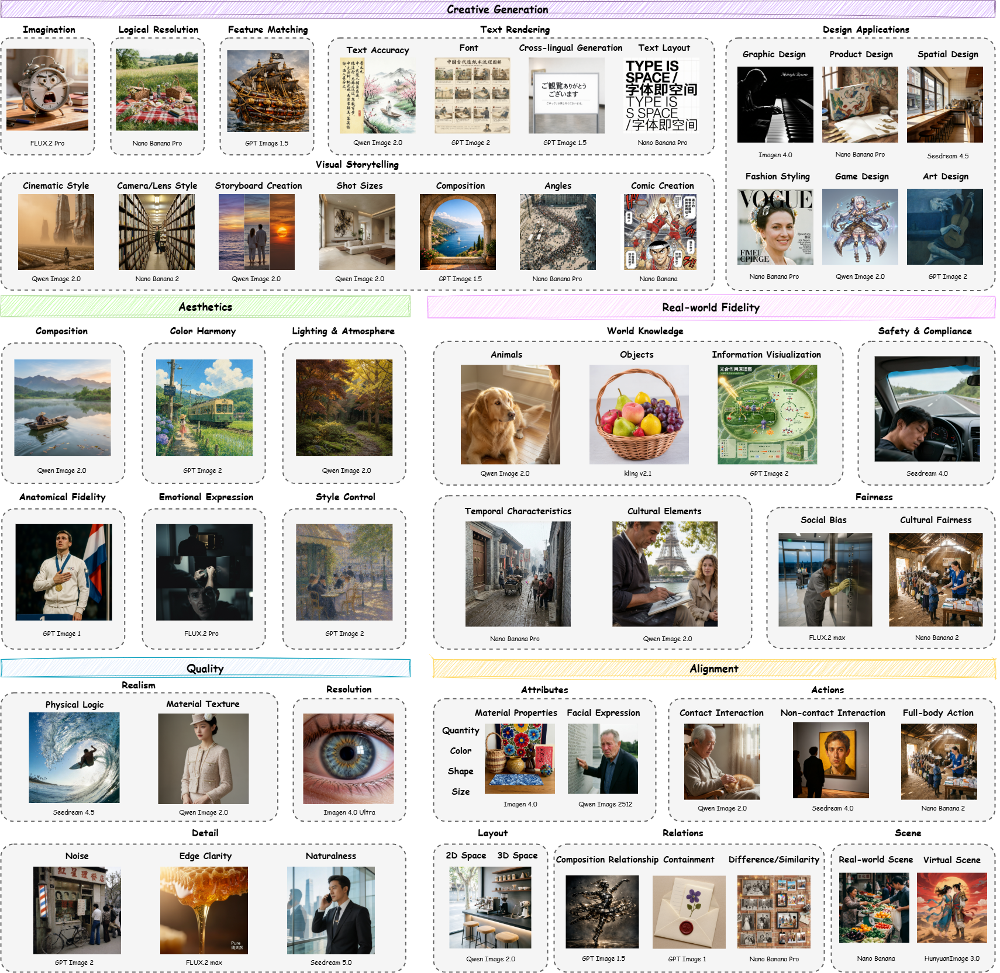

Problem → system → evidence → Imagent roadmap

IMAGENT Team briefIntelligence between human intent and generated pixels
Problem → system → evidence → Imagent roadmap
Context gap · beyond one-shot prompts
Frames 03—05Planning · grounding · memory · feedback · runtime
Frames 06—10IA-Bench · paper results · real output · evaluation
Frames 11—15Use cases · system anatomy · two milestones
Frames 16—21User intent without complete generation context
Incomplete requests · implicit intent · missing knowledge
Context Gap — distance from user context to sufficient generation context

Missing context → right source → deliberate rendering → traceable evidence

google/gemini-3.1-flash-image renderertrajectory 01 understand_user_intent 02 collect_available_context 03 construct_generation_prompt 04 generate_image_with_openrouter 05 persist_artifacts runtime_contract stable agent_strategy variable
VLM judge → explicit checks → correction context

Benchmark coverage · strict evaluation · comparable scores · inspectable artifacts
Composition · enumeration · multi-panel layouts
Math · science · commonsense · maze · map · geometry
Games · movies · anime · celebrities · stock · weather
User profile · conversation history · cross-turn consistency
Qwen-Image-Agent 45.4 · Direct Qwen-Image-2.0 17.4 · WISE-Verified 0.902 overall
IA-Bench overall score (%) · higher is better · paper Table 1
tryimagent.com
Website owner
Wonderful UI contributor
UI Design King card
GitHub avatar attached
Follow the website theme

1 2 3 4

Five quality dimensions · cost · latency · artifacts · traces
imagent-bench · project evaluation toolkitPromising research agent → dependable creative infrastructure
Incomplete brief → grounded and reviewable visual production
Moodboards · brand directions · product concepts · layouts · consistent iterations
Thumbnails · social sequences · editorial visuals · content packages
Audience concepts · factual creative · variants · quality checks
Launch imagery · commerce assets · catalogs · localization · repeatable workflows
Stable model call · runtime · benchmark cases · report format
agent/Context · prompts · reasoning · critique · regeneration
imagent_runtime/Trajectory · provider call · image · machine-readable trace
imagent-bench/Cases · scores · policies · canonical reports
imagent-ui/Playground · transparent reports · leaderboard · research story
Working foundation · target not reached
Next focus · quality · accuracy · real-world grounding
Specialized subagents · delegated work · parallel coherent output
Exceptional Image Agent first
Coordinated creative system next
Designers · creators · advertisers · teams · everyone with a visual idea